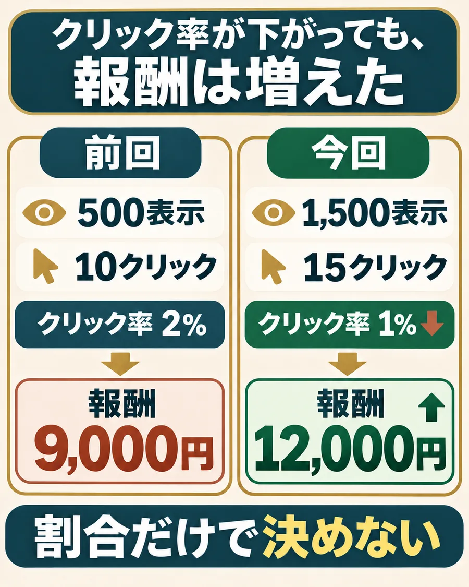

クリック率は下がった。収益まで下がった？
投稿した2本を、公開後7日間で比べてみます。次はどっちの見せ方を試すか。

クリック率は、リンクのクリック数÷動画の表示回数×100で計算します。
クリック率は2%から1%に下がりました。でも、クリック数は10件から15件に増えているんですよね。
割合だけで「失敗」と決めるのは早いです。
承認された紹介料も、9,000円から12,000円に増えています。
この数字なら、僕は今回の見せ方をもう一度試す候補に残します。ただ、どのセリフや映像が効いたのかは、数字だけではまだ分からないです。
よかった回の見せ方まで、毎回捨てない。
たとえば「悩みの一言、吹きかける手元、商品ページの表示」の順番がよかったなら、次もその順番は残して撮り直す。
全部変えると、何がよかったのか確かめられなくなるので。
- 1
次も残す：悩みの一言から入り、吹きかける手元と商品ページの表示を見せる順番。
- 2
一つ試す：最後にリンクへ案内するセリフを一つ変える。商品・リンク先・集計日数はそろえる。
- 3
比べる：次もクリックと承認された紹介料まで見る。よければ続け、反応が落ちたら別の見せ方も試す。
クリック・発生・承認の違いを確かめる
クリック10件、発生5件、承認3件を分ける。
クリック10件
→クリック10件のうち購入記録5件発生5件
→購入記録5件のうち報酬承認3件承認3件
「発生」は購入が記録された件数、「承認」は販売元が認めた件数。承認待ちなら、結果が出てから追記すればOKです。
クリックされない・承認が少ないときに調べる場所
クリック0と発生0では、確認する場所が違う。
表示あり
クリック0→リンクへの案内の位置・言葉
リンクが
開くか
クリック0→リンクへの案内の位置・言葉
リンクが
開くか
クリックあり
発生0→リンク先の商品・条件
紹介料の対象になる行動
数字を調べた期間
発生0→リンク先の商品・条件
紹介料の対象になる行動
数字を調べた期間
発生あり
承認が少ない→報酬の承認待ちか
取消・返品などの扱い
数字を調べた期間
承認が少ない→報酬の承認待ちか
取消・返品などの扱い
数字を調べた期間
数字がよくないときも、いきなり全部作り替えないでください。この図を見ながら、まず確かめる場所を一つ選びます。
表示回数は動画の分析画面、クリックと購入・承認は紹介サービスで見ます。動画ごとに、公開後7日間など同じ日数でそろえます。
例で試すか、今回の数字だけを残す
「次も残す見せ方」と「一つだけ試すところ」をメモしたらOK。あとは、同じ日数の数字で次の一本と比べてください。